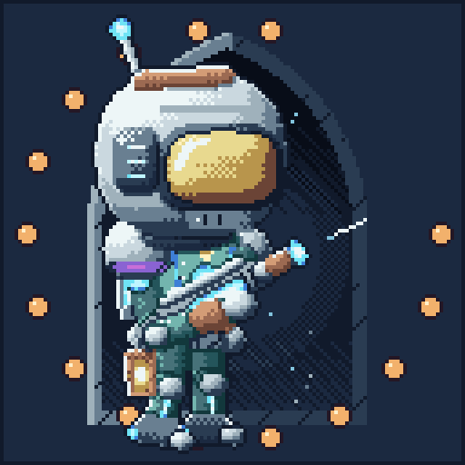
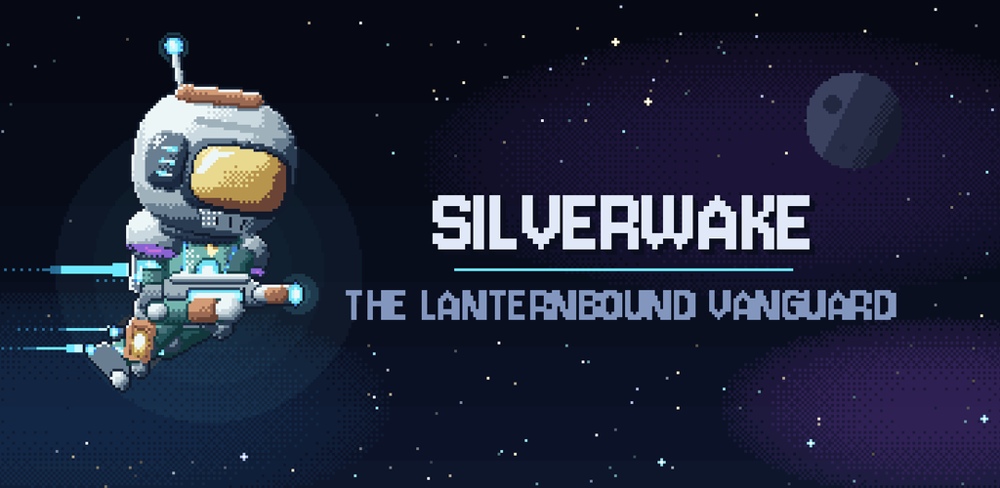
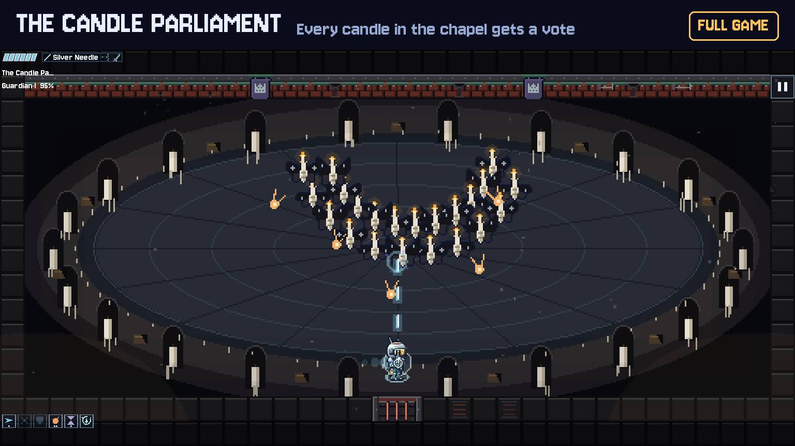
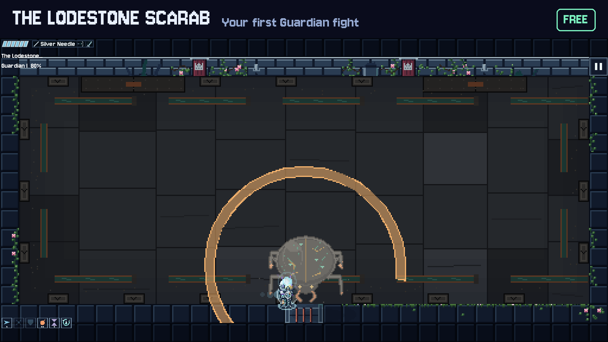
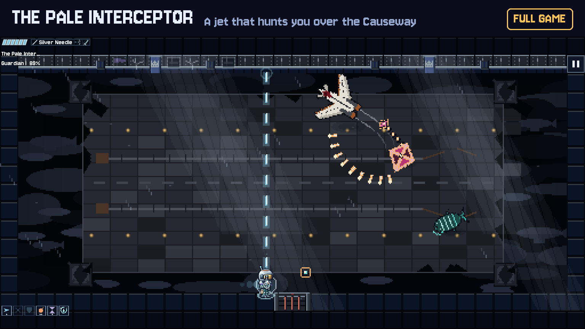
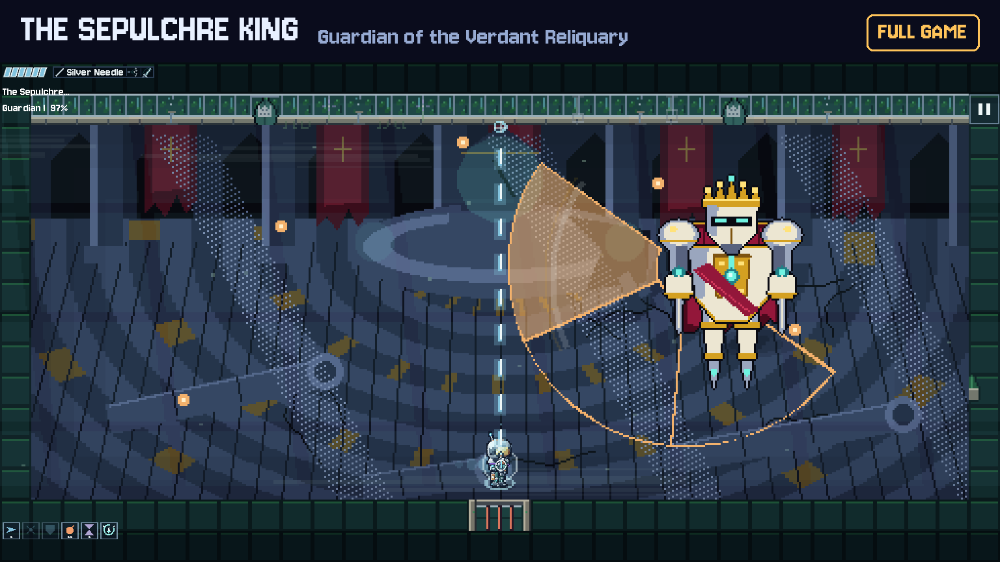

SILVERWAKE press kit
Back to the game. Everything here may be used in coverage of the game.
Fact sheet
- Title: SILVERWAKE (working title). Developer: Souls Indie Studio (Mansoor Nasir). Contact: mrmansoornasir@gmail.com.
- Platform: Android (Google Play). iOS later. Price: free opening chapter (sectors 1-3); the Full Game (sectors 4-10), USD 3.99, also removes adverts. Optional cosmetic packs (USD 1.99 each, Supporter pack 4.99) change appearance only. No subscriptions, no energy, no paid power.
- Genre: Gothic bullet-hell roguelite, top-down, room-based, landscape, pixel art. Plays offline; optional two-phone co-op over local Wi-Fi, no internet.
- One sentence: Fly the Lanternbound Vanguard through ten haunted Gothic sectors laid out anew every run, read every attack, and strike back.
- Numbers: 10 sectors, 100 room designs, 100 regular enemies, 20 bosses (a Guardian per sector, six hidden lair bosses, four arena bosses), 11 guns (two carried), 4 melee weapons, 12 modifiers, 27 relics, a skill tree, Boss Arena and Boss Rush.
- Controls: one thumb. Drag anywhere to fly and aim; the blaster fires by itself. Tap to dash, tap toward an enemy to dart in with the melee weapon, two-finger tap to swap guns, a wall button to parry.
- Accessibility: adjustable text size, reduced motion and flashes, high-contrast threats, battery saver, no cue that relies on colour alone.
- Engine: Godot 4.7.2. Pixel art drawn for the game (some with a local image-model texture pass); sound synthesised in code. No stock assets.
- Assets in this kit: icon_512.png, feature_graphic_1024x500.png, screenshots (1536x864), souls_indie_studio.png (the studio card), promo_30s.mp4.
Plain text: factsheet.md.
Icon

Feature graphic

Studio logo

Screenshots (1536x864)




Trailer
promo_30s.mp4 (1560x720, 30 s)